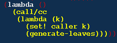

你可能觉得 continuation 不是什么有用的东西。现在来看看一个例 子：现在有两棵二叉树，你需要对它们进行比较，看这两棵树是否 “匹配”，也就是说它们在遍历时，途经的叶子结点是否相同。这种 遍历可以是先序，中序或者后序，但是我们总是先访问左边的分支， 再访问右边的分支。
这个说法似乎有点抽象，现在举一个例子一下我们要进行的比较。二 叉树我用sexp来表示：
(1 (2 3)) 和 ((1 2) 3) 是“匹配”的。因为遍历时，我们经过的 叶子依次都是 1, 2, 3.
而 (a (b c) d) 和 (a b (d e)) 是不“匹配”的。因为遍历时，我们 经过的叶子依次是 a, b, c, d 和 a, b, d, e.
最 naive 的办法就是深度优先遍历两棵二叉树，然后把途中遇到的 叶子结点分别放到两个表里，然后对这两个表的元素挨个进行比较。
把叶子结点放到两个表里，要求你对每个叶子都访问一次，我们来看 第二个例子的情况：
展开 tree1: a, b, c, d, ....
展开 tree2: a, b, d, e, ...
然后才对它们进行依此比较，如果发现其中某对叶子不同，就认为两 棵树不匹配。
我们其实做了很多无用功，我们首先用一个展开过程访问了所有的叶 结点，而在比较时，到第3个叶结点(c和d)就发生了不匹配，如果能 不访问之后的叶子就好了。
现在我们有一个好主意：能不能在对两棵树进行遍历的同时就两两比 较叶子是否相同？一旦发现途中有一对叶子不同，我们马上就可以断 定这两棵树不匹配。
这么自然的想法，却不容易用普通的控制结构实现，在遇到一个叶子 时，你如何能够跳出遍历的过程，把这个叶子传递给一个比较过 程？比较之后，你如何回到刚才遍历的路径中？
如果要用 C 语言实现，你该怎么办？你该保存多少中间结果？你是 不是想用 longjump()，线程，甚至 server-client 结构，还要设计 一套 protocol？还是把递归展开，自己控制堆栈？
其实最好的办法是改变数据结构，不用普通的二叉树，而使用线索二 叉树。可是这会给程序加上很多复杂度和 overhead。而且万一我们 遍历的不是二叉树而是是图怎么办？
有了 Scheme 的 call-with-current-continuation (call/cc), 这 个问题就易如反掌了。
下面就是一个起名为 tree-walker-genenator 的函数, 它接受一个 二叉树表作为参数，每次调用它时都返回一个函数。这些新生成的函 数被叫做 tree-walker, 这些 tree-walker 就像在这棵二叉树里的 步行者，它们每次被调用时会返回自己遍历这棵树是要访问的下一个 叶子结点。
(define tree-walker-genenator
(lambda (tree)
(let ((caller '*))
(letrec
(generate-leaves
(lambda ()
(let loop ((tree tree))
(cond ((null? tree) 'skip)
((pair? tree)
(loop (car tree))
(loop (cdr tree)))
(else
(call/cc
(lambda (rest-of-tree)
(set! generate-leaves
(lambda ()
(rest-of-tree 'resume)))
(caller tree))))))
(caller '()))))
(lambda ()
(call/cc
(lambda (k)
(set! caller k)
(generate-leaves))))))))
下面的函数就是用来匹配两棵二叉树的。它先为每棵树生成一个 tree-walker, 每次调用 walker1 就会返回 tree1 的下一个叶子， 每次调用 walker2 就会返回 tree2 的下一个叶子。一旦比较发现它 们不同，返回 #f，不再继续循环。否则直到比较完毕也是相等，那 么返回 #t.
(define tree-match?
(lambda (tree1 tree2)
(let ((walker1 (tree-walker-genenator tree1))
(walker2 (tree-walker-genenator tree2)))
(let loop ()
(let ((leaf1 (walker1))
(leaf2 (walker2)))
(if (eqv? leaf1 leaf2)
(if (null? leaf1) #t (loop))
#f))))))
我们用这个例子测试：
(define tree1 '(((a b) (y z)) (3 4))) (define tree2 '(((a b) (t z)) (3 4))) (define tree3 '(((a (b y) z)) (3 4))) (tree-match? tree1 tree2) ; #f (tree-match? tree1 tree3) ; #t
tree-walker-genenator 的代码有点不好理解。解释一下：
其实基本思想很简单。一个 walker 被调用时，它会把自己的 continuation 存放到 caller 变量中，然后进入 generate-leaves 递归遍历。当 generate-leaves 遇到叶子的时候，它使用 caller 变量把叶子交给 walker。并且把遍历的 continuation 记录在 generate-leaves 变量中。walker 得到一个叶子之后，被再次调用 时，就会使用 generate-leaves 变量回到递归遍历的过程中。
返回的。我们以后把它叫做 walker1.
它记录了 walker1 的一个 continuation，这个 continuation 是 由下面这个 (set! caller k) 记录进去的。

这个 continuation 的含义是，得到一个叶子结点并且返回给上一 层调用。
并且把 generate-leaves 函数重新绑定到一个新的函数，这个函 数会使 walker1 返回到 loop 循环中，也就是 else 之后继续执 行。以后调用 walker1 时，它都调用重新绑定的 generate-leaves， 返回到loop。这使得遍历继续进行。
loop 是在一个 named let 中定义的，它返回就会继续执行 (caller '()) 这个表达式，返回 '() 给 walker1:
walker1 得到 '()，从而知道二叉树已经遍历完毕。如果 walker1 再次被调用，它还是会返回到上一次返回 loop 的地方， 然后继续下一次循环，遇到空表，loop 返回 'skip，然后 (caller '())，又得到 '()，以后的调用都会得到 '().
这个 tree-walker-genenator 的实现来自 Dorai Sitaram 写的 "Teach Yourself Scheme in Fixnum Days".
我把函数名字改了一下，这样比较形象。
我想出另外一种 tree-walker-genenator 的实现，没有使用 named let 定义内部 loop，而是递归调用 generate-leaves。注意 (set! generate-leaves orig) 是必不可少的，否则在访问右枝时会使用返 回循环的 continuation，从而引起死循环。
(define tree-walker-genenator2
(lambda (tree)
(let ((caller '*))
(letrec
((generate-leaves
(lambda (t)
(define orig generate-leaves)
(cond ((null? t) '())
((pair? t)
(generate-leaves (car t))
(generate-leaves (cdr t)))
(else
(call/cc
(lambda (rest-of-tree)
(set! generate-leaves
(lambda (dummy)
(rest-of-tree 'resume)))
(caller t)))
(set! generate-leaves orig))))))
(lambda ()
(call/cc
(lambda (k)
(set! caller k)
(generate-leaves tree))))))))
这个实现在返回 '() 后如果继续调用 walker, 就会再次从头遍历二 叉树。因为这个实现里的 generate-leaves 在遍历右枝时是真正的 generate-leaves 函数自己，而不是遍历中的 continuation，它会 真正的“返回” '() 到 (set! caller k) 之后，而不是调用 (caller ...) 返回到那个 call/cc 记录的 continuation。所以， 下次 walker 调用 generate-leaves 实际上是重新起动遍历，而不 是回到遍历的中途。
……
脑袋有点晕，休息一下。呵呵。